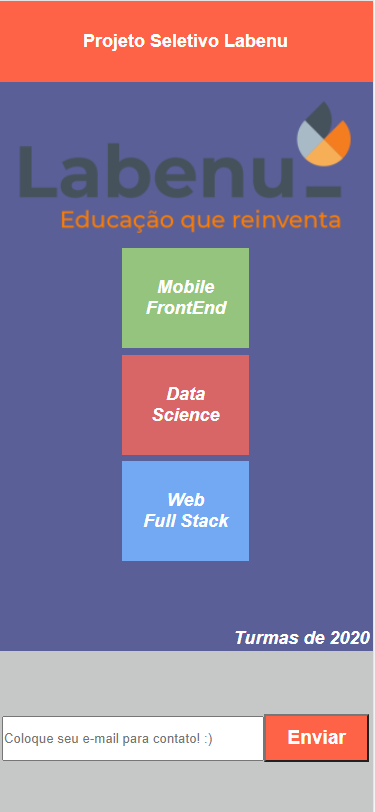

Projetos
Nessa página você irá visualizar os projetos que desenvolvi até o momento.
Home
Projeto Seletivo Labenu


Nesse projeto (meu primeiro projeto) foi utilizada as linguagens HTML, CSS e JavaScript
o objetivo foi deixa-lo igual a um exemplo que a Labenu tinha dado.
Logo abaixo você poderá ver as tecnologias utilizadas para a montagem do mesmo.
Lista de tecnologias utilizada no projeto
Projeto Lojinha

Esse é o meu 2º e último projeto, realizado na 1º semana de aula
da Labenu, consistiu em criar uma loja com 4 páginas, a primeira é
a pagina inicial, a segunda uma página de controle de estoque,a
terceira uma pagina de adição de produtos e a quarta e última uma
página onde listava os funcionários da loja.
Logo abaixo você poderá ver as tecnologias utilizadas.
Lista de tecnologias utilizada no projeto